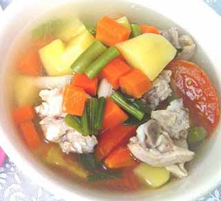

|
|
Cara Memasak Sayur Sop
- Pertama siapkan daging ayam kemudian potong menjadi beberapa bagian lalu cuci sampai bersih
- Kedua siapkan semua bahan bumbu halus lalu haluskan menggunakan cobek atau blender agar lebih cepat
- Ketiga siapkan air lalu rebus sampai mendidih
- Sambil menunggu air di rebus, siapkan semua bahan sayuran lalu kupas dan cuci sampai bersih kemudian tiriskan
- Jika sudah siapkan minyak panas lalu tumis bumbu yang sudah di haluskan sampai mengeluarkan bau yang cukup harum
- Masukkan potongan daging ayam kedalam air yang sedang direbus tadi
- Masukkan bumbu yang sudah ditumis dengan sayuran yang sudah dipotong sebelumnya
- Masak dengan api yang kecil saja agar bumbu lebih meresap kedalam ayam dan sayuran
- Selesai sop sayuran siap disantap
Bahan
- 1 kg daging ayam segar
- 250 gram kembang kol atau brokoli
- 5 batang seledri
- 3 lembar daun kol
- 3 buah kentang segar
- 5 batang daun bawang
- 100 gram jamur tiram
- Air bersih secukupnya
Bumbu Halus
- Bawang merah 9 siung
- Bawang putih 5 siung
- Cabai merah 5 buah
- Cabe keriting 9 buah
- 1 sendok teh merica
- 1 sendok teh ketumbar
- 3 buah kemiri
- Garam dan gula pasir secukupnya
|

Video on Youtube
|